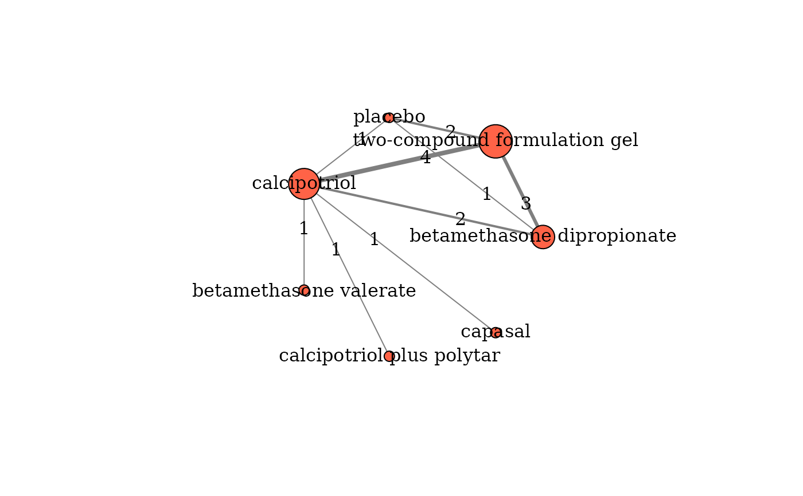

Illustrates the network plot for one outcome.
Usage
netplot(
data,
drug_names,
show_multi = FALSE,
multi_frame = -16,
alpha_multi_color = 0.1,
layout = igraph::layout_in_circle,
node_color = "tomato",
node_frame_color = "black",
node_frame_width = 1,
node_shape = "circle",
node_label_color = "black",
node_label_font = 1,
node_label_cex = 1,
node_label_dist = 0,
edge_color = "grey50",
edge_arrow_size = 0.5,
edge_lty = 1,
edge_label = NULL,
edge_label_color = "black",
edge_label_font = 1,
edge_label_cex = 2,
edge_curved = 0,
direction = FALSE,
...
)Arguments
- data
A data-frame of a one-trial-per-row format containing arm-level data of each trial. See 'Format' in
run_model.- drug_names
A vector of labels with the name of the interventions (nodes) in the order they appear in the argument
data.- show_multi
Logical to indicate whether to colour the closed-loops informed by multi-arm trials. The default is
show_multi = FALSE.- multi_frame
A numeric scalar to determine the size of the border around the closed-loops formed by multi-arm trials. The default is -16.
multi_framedetermines the mark.expand argument found in theplot.igraphfunction of the R-package igraph).- alpha_multi_color
A numerical scalar with range from 0 to 1 to determine the opacity of
multi_framecoloured using therainbowcolour palette. The default is 0.1.- layout
The layout specification. The default is
layout = layout_in_circleto plot the nodes in a circular layout. For more information refer to the R-package igraph,- node_color
A character or vector of characters (with length equal to the number of nodes) to indicate the colour of the nodes. The default is
node_color = "tomato".node_colordetermines the vertex.color argument found in theplot.igraphfunction of the R-package igraph).- node_frame_color
A character to indicate the colour of the frame around the nodes. The default is
node_frame_color = "black".node_frame_colordetermines the vertex.frame.color argument found in theplot.igraphfunction of the R-package igraph).- node_frame_width
A numerical scalar to indicate the width of the frame around the nodes. The default is 1.
node_frame_widthdetermines the vertex.frame.width argument found in theplot.igraphfunction of the R-package igraph).- node_shape
A character to indicate the shape of the nodes. The default is
node_shape = "circle".node_shapedetermines the vertex.shape argument found in theplot.igraphfunction of the R-package igraph).- node_label_color
A character to indicate the color of the node labels. The default is
node_label_color = "black".node_label_colordetermines the vertex.label.color argument found in theplot.igraphfunction of the R-package igraph).- node_label_font
A numerical scalar to indicate the font of the node labels. The default is 1.
node_label_fontdetermines the vertex.label.font argument found in theplot.igraphfunction of the R-package igraph).- node_label_cex
A numerical scalar to indicate the font size of the node labels. The default is 1.
node_label_cexdetermines the vertex.label.cex argument found in theplot.igraphfunction of the R-package igraph).- node_label_dist
A numerical scale between 0 and 1 to indicate the position of the node labels relative to the node center. The default is 0, where the label is centered.
node_label_distdetermines the vertex.label.dist argument found in theplot.igraphfunction of the R-package igraph).- edge_color
A character or vector of characters (with length equal to the number of edges) to indicate the colour of the edges. The default is
edge_color = "grey50".edge_colordetermines the edge.color argument found in theplot.igraphfunction of the R-package igraph).- edge_arrow_size
A numerical scalar between 0 and 1 to indicate the arrow size. The default is 0.5.
edge_arrow_sizedetermines the edge.arrow.size argument found in theplot.igraphfunction of the R-package igraph). This argument work only whendirection = FALSE.- edge_lty
A numerical scalar, discrete with values from 0 to 6 to indicate the line type of the edges. The default is 1 (solid).
edge_ltydetermines the edge.lty argument found in theplot.igraphfunction of the R-package igraph).- edge_label
A vector of number of characters with length equal to the number of edges to present the edge label. The default is
edge_label = NULLand refers to the number of studies investigating the corresponding comparisons.edge_labeldetermines the edge.label argument found in theplot.igraphfunction of the R-package igraph).- edge_label_color
A character to indicate the color of the edge labels. The default is
edge_label_color = "black".edge_label_colordetermines the edge.label.color argument found in theplot.igraphfunction of the R-package igraph).- edge_label_font
A numerical scalar to indicate the font of the edge labels. The default is 1.
edge_label_fontdetermines the edge.label.font argument found in theplot.igraphfunction of the R-package igraph).- edge_label_cex
A numerical scalar to indicate the font size of the edge labels. The default is 2.
edge_label_cexdetermines the edge.label.cex argument found in theplot.igraphfunction of the R-package igraph).- edge_curved
A numerical scalar with range from 0 to 1 that indicates the edge curvature. The default is 0 (no curvature).
edge_curveddetermines the edge.curved argument found in theplot.igraphfunction of the R-package igraph).- direction
Logical to draw (TRUE) or not (FALSE) arrow for each edge according to each direction. The default is
direction = FALSE. For more information refer to the R-package igraph).- ...
Further graphical arguments of the
plot.igraphfunction of the R-package igraph
Value
A network plot with coloured closed-loops informed by multi-arm trials. Each node indicates an intervention and each edge an observed pairwise comparison.
Details
The edge thickness is proportional to the number of trials investigating the corresponding comparison. The node size is weighted by the total sample size of the corresponding intervention.
The user can control many of the arguments found in the
plot.igraph function of the
R-package igraph), such
as the colour of the nodes and edges, the node and edge label size, and so
on.
Examples
data("nma.bottomley2011")
# Return the first six trials of the dataset
head(nma.bottomley2011)
#> study t1 t2 t3 t4 r1 r2 r3 r4 m1 m2 m3 m4 n1 n2 n3 n4
#> 1 Buckley, 2008 1 6 NA NA 67 79 NA NA 2 1 NA NA 110 108 NA NA
#> 2 Tyring, 2008 6 7 NA NA 74 12 NA NA 2 0 NA NA 135 42 NA NA
#> 3 Kragballe, 2009 3 6 NA NA 19 114 NA NA 9 2 NA NA 105 207 NA NA
#> 4 Luger, 2008 3 6 NA NA 101 196 NA NA 44 9 NA NA 431 419 NA NA
#> 5 Klaber, 1994 2 3 NA NA 175 138 NA NA 2 11 NA NA 234 240 NA NA
#> 6 Barrett, 2005 3 4 NA NA 79 79 NA NA 19 18 NA NA 225 236 NA NA
# The names of the interventions in the order they appear in the dataset
interv_names <- c("betamethasone dipropionate", "betamethasone valerate",
"calcipotriol", "calcipotriol plus polytar", "capasal",
"two-compound formulation gel", "placebo")
# Create the network plot
netplot(data = nma.bottomley2011,
drug_names = interv_names,
edge_label_cex = 1)
